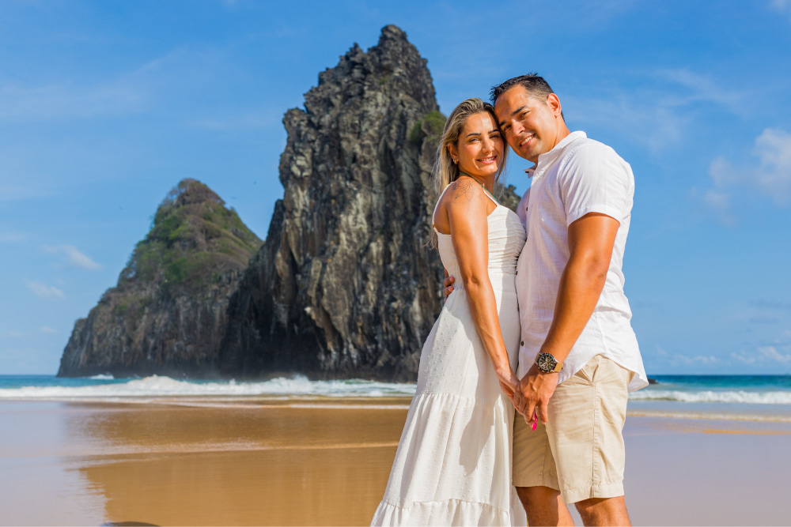

Faltam
- 

Local da cerimônia
Estr. Maria da Conceição Fraga, 1000
Califórnia, Nova Santa Rita - RS
Villa Madero - Espaço De Eventos
Após cerimônia, coquetel
e jantar no mesmo local.
clique aqui para ver o trajeto!
Sugestões
Vestimenta convidados
Look Esporte Fino
Para auxiliar nossos convidados, gostaríamos de compartilhar algumas dicas sobre o look do nosso tão aguardado dia, escolhemos o traje esporte fino, que é um meio termo entre a produção de gala e a casual, um perfeito equilíbrio entre o formal e o descontraído.
Para os homens fica a dica de usar calças como jeans, sarja ou modelos sociais, que podem ser combinadas com camisa de manga longa ou curta, camisetas acompanhadas de blazers ou polos, por exemplo. É importante observar que a utilização de terno completo, gravata e sapato sociail não é necessária nessa ocasião, fique à vontade para usá-los somente se quiser.
- Sugerimos evitar shorts, bonés e bermudas. Uma maquiagem mais discreta é apropriada para a ocasião, evitando excessos de brilho. No caso de sapatos, sugerimos as mulheres que evitem saltos extremamente altos, pois a nossa cerimônia acontecerá em um ambiente gramado.
- A cor escolhida para as madrinhas foi o verde menta e suas variações, sugerimos para as convidadas caso seja possível, evitar o uso dessas tonalidades.
Para as mulheres a nossa sugestão é o uso de vestidos curtos, midi ou longo, macacões ou conjuntos de tecidos fluídos ou mais estruturados, como você sentir-se melhor.
O que não se deve usar:
Importante!
Agradecemos a atenção e aguardamos ansiosamente por esse momento especial em nossa vida.
Hotel
Estamos ansiosos para celebrar nosso casamento com todos vocês, para auxiliar os familiares e amigos que vão vir de outras cidades, sugerimos a estadia em um hotel que fica próximo ao local do casamento.
Lembrando que não temos como prever como estará a ocupação do hotel na data do casamento, por isso, pode ser mais seguro realizar a reserva com antecedência.
Hotel Premier, 2500
Floresta, Nova Santa Rita
Telefone: (51) 3479-1177
clique aqui para ver o local do hotel!Contamos com sua presença !